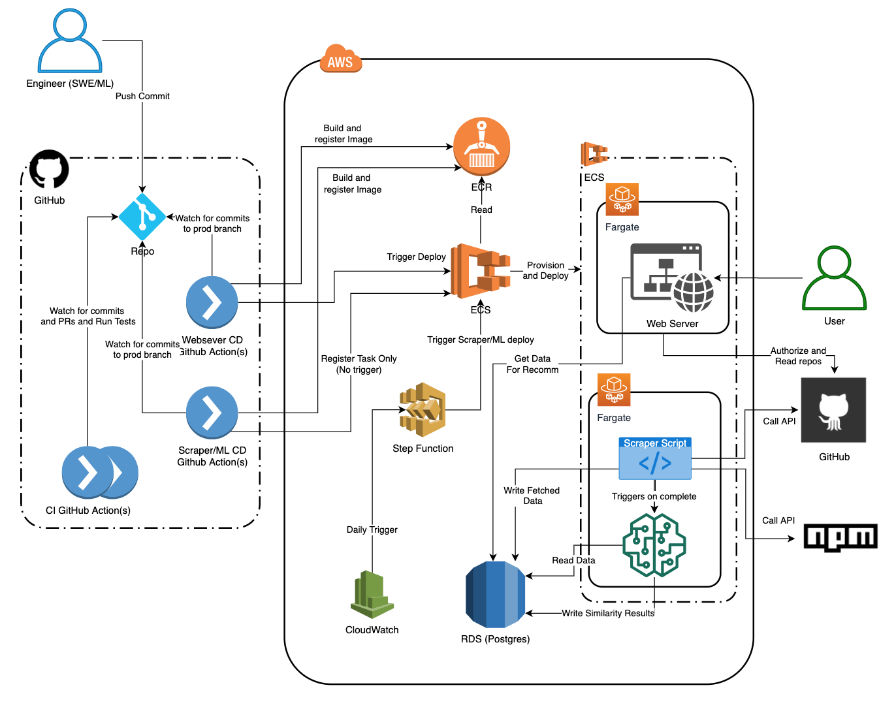

Architecture¶
Diagrams¶

Interface definition¶
Query engine¶
month_calculation¶
Compute month-long time slices for use in GitHub scraping
-
scraper.month_calculation.month_delta(date, delta)¶ Get the date string corresponding with the given offset from the given date
github¶
Fetch npm dependency information from the GitHub v4 API
scraper.github.run_query(today, language='JavaScript')¶Fetch all repositories for the given month
scraper.github.run_query_once(node_per_loop, daily_search_str, cursor, language)¶
scraper.github.write_db(database, result, language='JavaScript')¶Write a set of repositories and their dependencies to the database for JS packages
npm¶
psql¶
Insert application, package, and dependency data into a PostgreSQL database
scraper.psql.connect_to_db()¶Connect to the database
scraper.psql.insert_to_app(database, url, followers, app_name, app_hash)¶Upsert a row into the applications table
scraper.psql.insert_to_dependencies(database, application_id, package_id)¶Upsert a row into the dependency table
scraper.psql.insert_to_package(database, name)¶Upsert a row into the packages table
scraper.psql.update_package_metadata(database, name, monthly_downloads_last_month, monthly_downloads_a_year_ago, categories, modified)¶Update metadata for a particular package
Recommender model¶
TODO About model
database¶
Database processing to prepopulate UI tables
model.database.package_table_postprocessing(cursor)¶Preprocessing on the packages table
- arguments:
- cursor
Database cursor
model.database.update_bounded_similarity_scores(cursor)¶Update bounded similarity score
- arguments:
- cursor
Database cursor
model.database.update_popularity_scores(cursor)¶Update popularity scores
- arguments:
- cursor
Database cursor
model.database.update_trending_scores(cursor)¶Update trending scores
- arguments:
- cursor
Database cursor
model.database.write_similarity_scores(scores, host, port, database, table, user, password)¶Write similarity scores to the database
- arguments:
- scores
DataFrame containing pairs of packages and their similarity score
- host
Database host
- port
Database port
- database
Database name
- table
Database table for the similarity scores
- user
Database user
- password
Database password
Web service¶
webservice.views¶
Views for the web service
-
webservice.views.about(request)¶ Return about info
-
webservice.views.callback(request)¶ Github redirect here, then retrieves token for API
-
webservice.views.index(request)¶ Return landing page
-
webservice.views.login(request)¶ Log user in using Github OAuth
-
webservice.views.logout(request)¶ Logs user out but keep authorization ot OAuth Github
-
webservice.views.recommendations(request, name)¶ Get recommended packages for the repo
- arguments:
- request
- name
repo name
- returns:
Rendered recommendation page
-
webservice.views.recommendations_json(request, name)¶ Get recommended packages for the repo in JSON format
- arguments:
- request
- name
repo name
- returns:
JSON object with recommendations
-
webservice.views.recommendations_service_api(request)¶ Returns package recommendations for API POST call without authentication
- arguments:
- request
POST request of application/json type
- returns:
list of package recommendations
-
webservice.views.repositories(request)¶ Get full list (up to 100) for the current user
webservice.recommender_service¶
Get package recommendations from our database
-
class
webservice.recommender_service.RecommenderService¶ Recommender engine for the web server
-
get_recommendations(dependencies, max_recommendations=10000)¶ Return a list of package recommendations and metadata given a set of dependencies
-
strip_to_major_version(dependencies)¶ Strip everything after the major version in each dependency
-
webservice.github_util¶
Utility functions for the web server
webservice.github_util.get_dependencies(token, repo_full_name, branch_name)¶Gets repository info for a specific repo (from package.json)
- arguments:
- token
GitHub token for auth
- repo_full_name
repo name with user name
- branch_name
specific branch to fetch dependencies for, or MASTER (default)
- returns:
dependencies and all branch names
webservice.github_util.get_repositories(token)¶Get the repositories associated with the given GitHub token
- arguments:
- token
GitHub API token
- returns:
Get the repositories associated with a user’s token
webservice.github_util.get_user_info(token)¶Get the user info associated with the given GitHub token
- arguments:
- token
GitHub API token
- returns:
JSON object with user info
webservice.github_util.get_user_name(token)¶Retrieves name of the authenticated GitHub user
- arguments:
- token
GitHub API token
- returns:
Get the name of the user who is authenticated
webservice.github_util.is_user_authenticated(token)¶Determine if the user is authenticated
- arguments:
- token
GitHub API token
- returns:
Boolean flag that is True if the user is authenticated
webservice.github_util.javascript_dependencies_name_to_purl(dependencies)¶Convert Javascript dependency names to the universal Package URL (PURL) format
- arguments:
- dependencies
Array of name@version like names
webservice.github_util.parse_dependencies(dependencies_string, language, is_from_github=False)¶Take a stringified package.json file and extract its dependencies
- arguments:
- dependencies_string
A stringified package.json object
- language
Language for which dependencies are for
- is_from_github
Indicates if dependencies came for GitHub API (or manual/api call)
- returns:
A list of npm dependencies
webservice.github_util.python_dependencies_name_to_purl(dependencies)¶Convert Python dependencies names to the universal Package URL (PURL) format
- arguments:
- dependencies
List of name straight from requirements text file